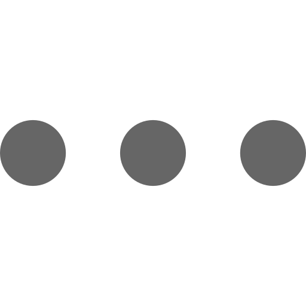
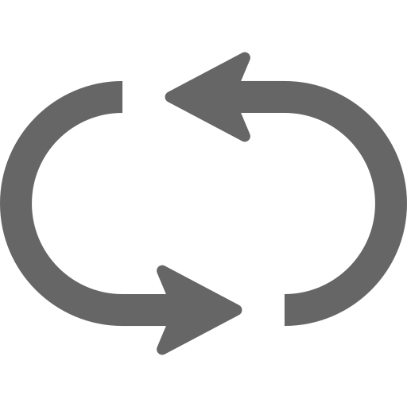

<div class="document">

  <!-- フォルダ一覧のヘッダメニュー -->
  <div class="list">
    <div class="control">
      <div class="action" @click="handleOpenAllClick">全て開く</div>
      <div class="action" @click="handleCloseAllClick">全て閉じる</div>
      <div class="folder-setting">
        <div class="action" @click="handleFolderCreateClick">新規作成</div>
        <div class="action" @click="handleSettingClick">設定</div>
      </div>
    </div>

    <!-- フォルダとファイルの一覧 -->
    <div class="folder-list">
      <div class="folder" v-for="folder in folders">
        <span @click="handleFolderNameClick(folder.folderId)">{{folder.folderName}}</span>
        <div class="plus" @click="handleFileCreateClick(folder.folderId)">＋</div>
         { handleFolderSettingClick(folder.folderId) }" />
        <div class="folder-inner" v-if="folder.opened">
          <div class="file" v-for="file in folder.files">
            <router-link class="file-inner" :class="{ selected: file.selected }"
              :to="{ name: 'document-file', params: { teamId: $store.state.common.header.team.current, projectId: $store.state.common.header.project.current, fileId: file.fileId }}">
              {{file.fileName}}</router-link>
          </div>
        </div>
      </div>
    </div>
  </div>

  <!-- 閲覧 -->
  <div class="view" v-if="(display.view.documentId || display.edit.folderId || display.edit.documentId) && !display.editable">
    <div class="file">
      <div class="title">
        <span>{{display.view.documentName}}</span>
        <div class="control">
          <div class="icon" @click="handleDocumentEditClick">
            
          </div>
          <div class="icon" @click="display.view.optionMenu.visible = !display.view.optionMenu.visible">
            
            <div class="option-menu" v-if="display.view.optionMenu.visible">
              <div class="item" @click="handleDocumentDuplicateClick">
                
                <span>複製</span>
              </div>
              <div class="item" @click="handleDocumentDeleteClick">
                
                <span>削除</span>
              </div>
            </div>
          </div>
        </div>
      </div>
      <div class="doc-content" v-html="compiledMarkdown"></div>
      <div class="navi">
        <div class="navi-inner">
          <div class="title">
            <div>目次</div>
          </div>
          <div class="link">
            <a v-for="t in list.toc" :class="'level-'+t.level" :href="'#'+t.anchor">{{t.escapedText}}</a>
          </div>
        </div>
      </div>
    </div>
  </div>

  <!-- 作成編集 -->
  <div class="form" v-if="(display.view.documentId || display.edit.folderId || display.edit.documentId) && display.editable">
    <div class="editor" :class="{'editor-full-screen': !display.edit.isSpread}">
      <div class="label">ドキュメント名</div>
      <input type="text" class="file-name" placeholder="ドキュメントの名称を入力してください" v-model="display.edit.documentName" />
      <div class="label">本文</div>
      <textarea class="doc-body" placeholder="ドキュメントの本文を入力してください" v-model="display.edit.content"></textarea>
      <div class="submit-button-box">
        <input type="button" value="作成" class="flat-button save" @click="handleEditorNewCreateClick"
          v-if="display.edit.isNew" />
        <input type="button" value="取消" class="flat-button cancel" @click="handleEditorNewCancelClick"
          v-if="display.edit.isNew" />
        <input type="button" value="更新" class="flat-button save" @click="handleEditorUpdateClick"
          v-if="!display.edit.isNew" />
        <input type="button" value="取消" class="flat-button cancel" @click="handleEditorCancelClick"
          v-if="!display.edit.isNew" />
        <div class="right-box">
          <input type="button" value="プレビューを表示" class="flat-button spread" v-if="!display.edit.isSpread"
            @click="handlePreviewOpenClick" />
          <input type="button" value="プレビューを非表示" class="flat-button spread" v-if="display.edit.isSpread"
            @click="handlePreviewCloseClick" />
        </div>
      </div>
    </div>
    <div class="preview" v-if="display.edit.isSpread">
      <div class="doc-content" v-html="compiledEditorMarkdown"></div>
    </div>
  </div>

  <!-- フォルダ全体設定 -->
  <md-dialog :md-active.sync="dialog.setting.visible" class="setting-dialog folder-all-setting">
    <div class="title">
      <span>全体設定</span>
      <div class="close-icon" @click="handleSettingCloseClick">
        
      </div>
    </div>
    <div class="form">
      <draggable element="div" class="folder-list" v-model="dialog.setting.folders" :animation="100">
        <div class="folder" v-for="folder in dialog.setting.folders">
          
          <span>{{folder.folderName}}</span>
        </div>
      </draggable>
      <div class="button-box">
        <div class="flat-button save" @click="handleSettingSaveClick">
          
          <span>更新</span>
        </div>
        <div class="flat-button cancel" @click="handleSettingCancelClick">
          
          <span>取消</span>
        </div>
      </div>
    </div>
  </md-dialog>

  <!-- フォルダ作成 -->
  <md-dialog :md-active.sync="dialog.folderCreate.visible" class="setting-dialog folder-create">
    <div class="title">
      <span>フォルダ作成</span>
      <div class="close-icon" @click="handleFolderCreateCloseClick">
        
      </div>
    </div>
    <div class="form">
      <div class="label">フォルダ名</div>
      <input type="text" v-model="dialog.folderCreate.folderName" />
      <div class="error-message" v-if="dialog.folderCreate.errorMessage !== ''">{{dialog.folderCreate.errorMessage}}
      </div>
      <div class="button-box">
        <div class="flat-button save" @click="handleFolderCreateSaveClick">
          
          <span>作成</span>
        </div>
        <div class="flat-button cancel" @click="handleFolderCreateCancelClick">
          
          <span>取消</span>
        </div>
      </div>
    </div>
  </md-dialog>

  <!-- フォルダ設定 -->
  <md-dialog :md-active.sync="dialog.folderSetting.visible" class="setting-dialog folder-all-setting folder-setting">
    <div class="title">
      <span>フォルダ設定</span>
      <div class="close-icon" @click="handleFolderSettingCloseClick">
        
      </div>
    </div>
    <div class="form">
      <div class="label">フォルダ名</div>
      <input type="text" v-model="dialog.folderSetting.folderName" />
      <div class="error-message" v-if="dialog.folderSetting.errorMessage !== ''">{{dialog.folderSetting.errorMessage}}
      </div>
      <div class="label">ファイル並び替え</div>
      <draggable element="div" class="folder-list" v-model="dialog.folderSetting.files" :animation="100">
        <div class="folder" v-for="file in dialog.folderSetting.files">
          
          <span>{{ file.fileName }}</span>
        </div>
      </draggable>
      <div class="button-box">
        <div class="flat-button save" @click="handleFolderSettingSaveClick">
          
          <span>更新</span>
        </div>
        <div class="flat-button cancel" @click="handleFolderSettingCancelClick">
          
          <span>取消</span>
        </div>
        <div class="right-box">
          <div class="flat-button cancel" v-if="!dialog.folderSetting.deleteConfirm.visible"
            @click="handleFolderSettingDeleteClick">
            
            <span>削除</span>
          </div>
          <div class="flat-button delete" v-if="dialog.folderSetting.deleteConfirm.visible"
            @click="handleFolderSettingDeleteSubmitClick">
            
            <span>フォルダを削除</span>
          </div>
          <div class="flat-button cancel" v-if="dialog.folderSetting.deleteConfirm.visible"
            @click="handleFolderSettingDeleteCancelClick">
            
            <span>取消</span>
          </div>
        </div>
      </div>
    </div>
  </md-dialog>

  <!-- ファイル設定 -->
  <md-dialog :md-active.sync="dialog.fileDeleteConfirm.visible" class="setting-dialog delete-confirm">
    <div class="title">
      <span>ファイル削除</span>
      <div class="close-icon" @click="handleFileDeleteComfirmCloseClick">
        
      </div>
    </div>
    <div class="form">
      <div class="label">【{{display.view.documentName}}】を削除してもよろしいですか？</div>
      <div class="button-box">
        <div class="flat-button save" @click="handleFileDeleteComfirmSubmitClick">
          
          <span>削除</span>
        </div>
        <div class="flat-button cancel" @click="handleFileDeleteComfirmCancelClick">
          
          <span>取消</span>
        </div>
      </div>
    </div>
  </md-dialog>

</div>